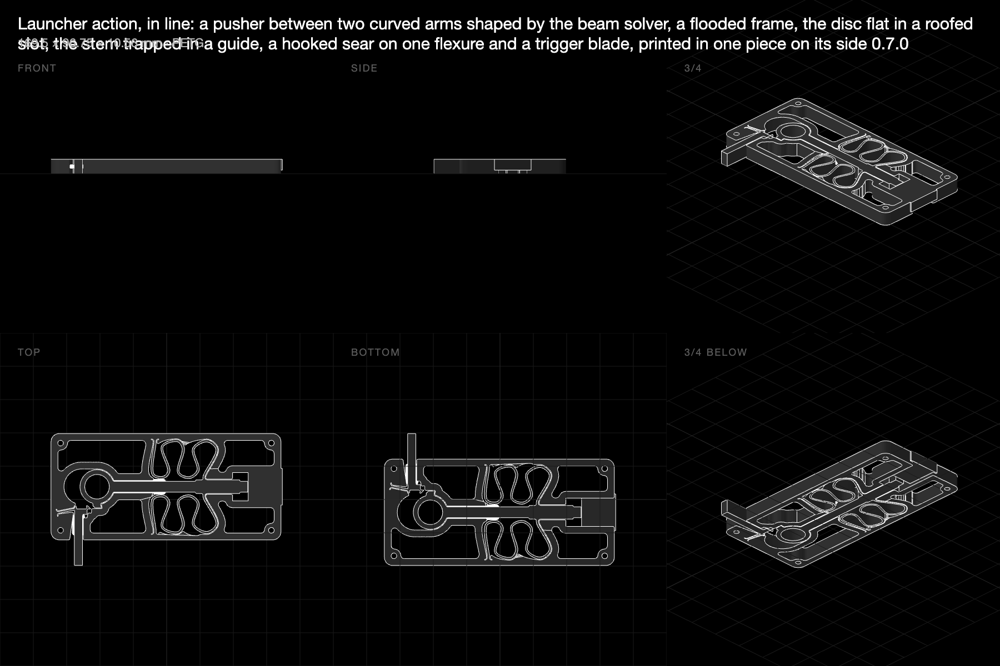
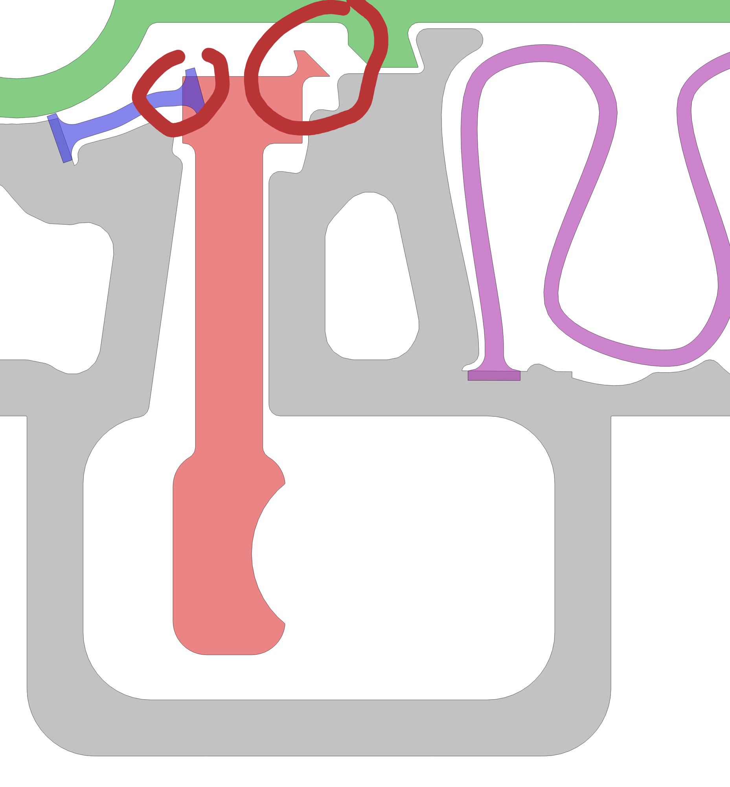
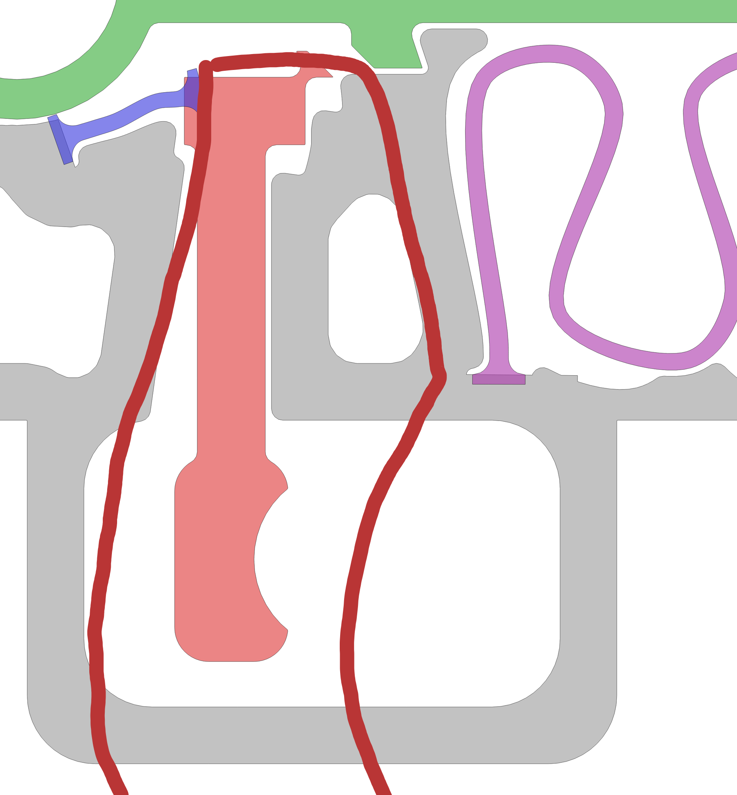
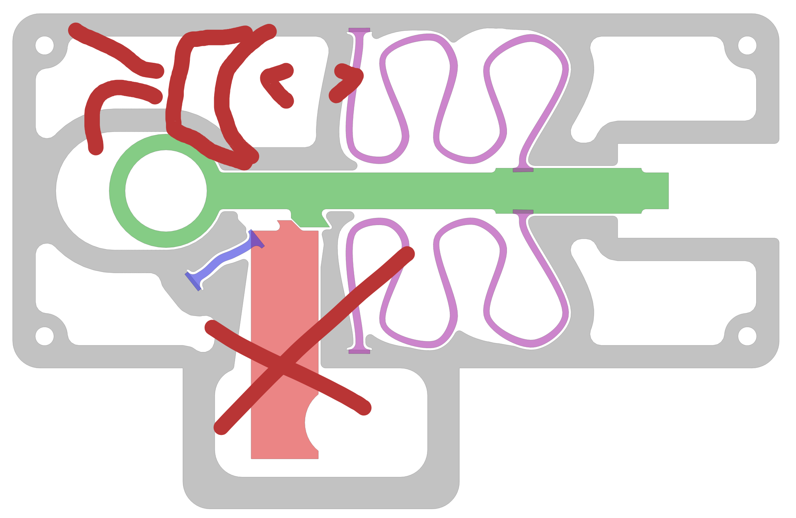
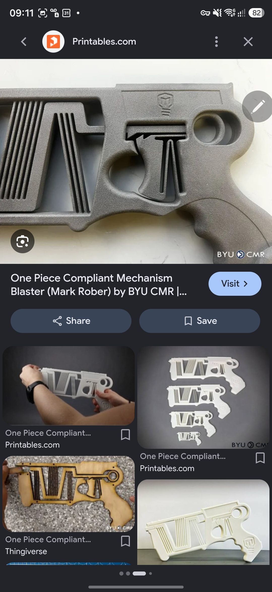
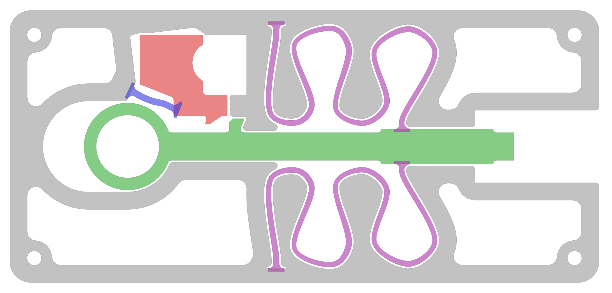

← rulecad archive
Launcher trigger: catching a strong spring and letting it go at once
3 November 2026 · work in progress · examples/bench/projects/launcher/objects/inline · code on branch trigger-wip
The in-line launcher (0.6.0) had a spring, a frame and a barrel, but no catch. The goal: a compliant catch that holds a much stronger spring than today's, and a trigger that lets it go in an instant, all simulated as one sequence: draw, catch, hold, pull, release and shot.
What rulecad gained for it
- Friction in the simulation. Coulomb friction (μ 0.3 for printed PETG on PETG) at every contact, so a trigger
pulls against what its sear drags.
- One sequence. The step that lets the catch go starts the shot, so the trigger's pull, the force the catch held
and the time until the disc leaves come from one run.
- Where the finger pulls. The force is measured at the trigger's face, not the part's middle.
- Springs that are hinges. The curve shaper can make a spring that turns about a chosen point, and that stays
stiff along a given load line ("hold"): a hinge that is also a strut.
- Holes for plates. Fastener holes in solid bosses, for snap-pinned plates either side, should a frame need them.
The principle
The sear hangs on a flexure that lies on the line the tooth pushes along. The spring's pull is then that flexure's tension, not a bend, and a strip of PETG carries hundreds of newtons in tension. The catch holds however strong the spring, and turning the sear off the tooth costs only friction and the hinge's own stiffness.
0. Version 0.7.0, published: a blade at the back corner

A tooth under the pull ring, the sear on one straight 12 mm flexure, a 40 mm trigger blade out of the frame's bottom corner. In the simulation the catch holds 7.3 N, and a 1.47 N pull over 4.2 mm lets it go. The disc leaves 7.7 ms later at 2.3 m/s. The model.
What was wrong, in the user's words: it sat in a corner instead of the open space ahead of the ring; the blade was a thin stick, not a trigger; the hinge was a plain strip, not a shaped spring.
1. The catch ahead of the ring, a blade into a guard

The tooth moved under the stem ahead of the ring, the hinge was shaped by the solver, and a guard loop was added below the frame. The user ringed the hinge and the head: far too little material, it would snap.
2. A solid trigger body in a guard

The trigger became one solid block. Still too slim for the room (the user drew the body it should be, like the BYU blaster's), and the guard added volume the frame didn't need.

The user's point: the frame already has room. Generate the springs inside it, not new volume around it.

3. Inside the frame, above the ring

The tooth on the stem's top, the sear and trigger one block in the room above the ring, the hinge shaped in the room behind it, the finger's room kept open ahead. It cocks, holds and lets go in the simulation, but:
- The pull is heavy: 6.5 N against a 7.3 N catch. In that window a finger pushes only about 13 mm from the hinge's
middle, where the blade had 40.
- The hook only just holds: it needs friction over 0.11.
- A regression: the flood now cuts room round the parts along their planned paths only. That stopped a frameless
first pass from carving the frame where the catch tipped the pusher, but the arms then fail their finite-element check (1.64% against 1.25%).
Next: two stages
The user's suggestion: mount the trigger like the pusher, on two springs rooted in different places, for a firm hold and a long pull. That makes a two-stage catch, all inside the frame:
1. The sear, small and solid, on its tension hinge, carries the spring's pull. Its face tips it open under load, and only a blocker stops it. 2. The trigger, a big block in the room above the ring on two shaped arms, pulled back a long way. Its edge is the blocker. Pulled, the blocker slides off and the spring flips the sear open: the finger fights only the blocker's friction, a fraction of the spring's pull. 3. A pawl for a tooth: a short stiff flexure on the stem flexes under the sear as it's drawn and springs up behind it. Under load it's pushed end-on. That lets the sear stay blocked while it's drawn.